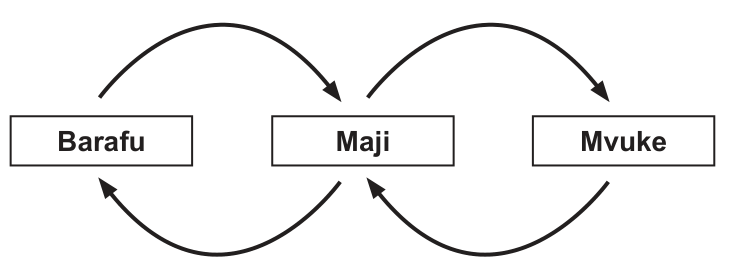

3. Chukua mfuniko wa bati weka karibu na mdomo wa birika ukikinga mvuke unaotoka. Chunguza Kielelezo namba 4.
Kielelezo namba 4: Mabadiliko ya maada
4. Je, kitu gani kimetokea baada ya mvuke kuzuiwa katika Kielelezo namba 4?
Maada ziko katika hali ya yabisi, kimiminika, na gesi. Maada huwa inabadilika kutoka hali moja kwenda nyingine kutokana na kubadilika kwa jotoridi. Barafu ikipata joto huyeyuka na kuwa maji. Maji yakipata joto huchemka na kuwa mvuke au gesi. Mvuke ukikutana na kitu chenye jotoridi lenye kiwango cha chini huwa kimiminika. Kimiminika kinapogandishwa huwa yabisi. Kwa mfano, barafu iko katika hali ya yabisi. Maji yako katika hali ya kimiminika na mvuke uko katika hali ya gesi. Angalia Kielelezo namba 5.

Kielelezo namba 5: Mabadiliko ya hali za maada
SAYANSI MEMKWA 2.indd 52
21/08/2021 11:22